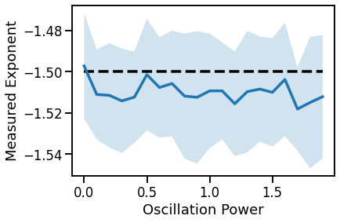

IRASA¶
This notebook measures aperiodic activity using the ‘irregular resampling auto-spectral analysis’ (IRASA) algorithm.
%matplotlib inline
import numpy as np
import matplotlib.pyplot as plt
from neurodsp.sim import sim_powerlaw, sim_synaptic_current, sim_combined
from neurodsp.spectral import compute_spectrum
from neurodsp.aperiodic import compute_irasa, fit_irasa
from fooof.plts import plot_spectrum, plot_spectra
# Import custom code
import sys; from pathlib import Path
sys.path.append(str(Path('..').resolve()))
from apm.run import run_sims
from apm.methods import irasa
from apm.methods.settings import IRASA_PARAMS
from apm.methods.settings import IR_F_RANGE as F_RANGE
from apm.plts import plot_lines
from apm.plts.settings import AP_COL, COMB_COL
from apm.sim.settings import FS, SIM_PARAMS_AP, SIM_PARAMS_COMB, EXPS, FREQS, POWERS, N_SIMS, EXP
from apm.sim.examples import SIG_AP, SIG_KN, SIG_OSC, SIG_COMB
Settings¶
# Notebook settings
SAVE_FIG = False
# Check the IRASA settings
print(IRASA_PARAMS)
{'fs': 1000, 'f_range': (1, 50)}
Example: Powerlaw Signal¶
# Calculate IRASA and fit exponent
freqs, psd_ap, psd_pe = compute_irasa(SIG_AP, **IRASA_PARAMS)
fit_off, fit_exp = fit_irasa(freqs, psd_ap)
# Compute the full power spectrum
freqs_full, psd_full = compute_spectrum(SIG_AP, FS, f_range=F_RANGE)
# Compare the full spectrum the IRASA separate aperiodic component
plot_spectra([freqs_full, freqs], [psd_full, psd_ap],
labels=['Full PSD', 'PSD-AP'],
log_freqs=True, log_powers=True)
# Check the calculated value against ground truth
print('Measured Exponent:\t {:1.4f}'.format(fit_exp))
print('Expected Exponent:\t {:1.4f}'.format(EXP))
Measured Exponent: -1.5137
Expected Exponent: -1.5000
Example: Combined Signal¶
# Calculate IRASA and fit exponent
freqs, psd_ap, psd_pe = compute_irasa(SIG_COMB, **IRASA_PARAMS)
fit_off, fit_exp = fit_irasa(freqs, psd_ap)
# Compute the full power spectrum
freqs_full, psd_full = compute_spectrum(SIG_COMB, FS, f_range=F_RANGE)
# Compare the full spectrum the IRASA separate aperiodic component
plot_spectra([freqs_full, freqs], [psd_full, psd_ap],
labels=['Full PSD', 'PSD-AP'],
log_freqs=True, log_powers=True)
# Check the calculated value against ground truth
print('Measured Exponent:\t {:1.4f}'.format(fit_exp))
print('Expected Exponent:\t {:1.4f}'.format(EXP))
Measured Exponent: -1.4933
Expected Exponent: -1.5000
Example: Knee Signal¶
# Calculate IRASA and fit exponent
freqs, psd_ap, psd_pe = compute_irasa(SIG_KN, **IRASA_PARAMS)
fit_off, fit_exp = fit_irasa(freqs, psd_ap)
# Compute the full power spectrum
freqs_full, psd_full = compute_spectrum(SIG_KN, FS, f_range=F_RANGE)
# Compare the full spectrum the IRASA separate aperiodic component
plot_spectra([freqs_full, freqs], [psd_full, psd_ap],
labels=['Full PSD', 'PSD-AP'],
log_freqs=True, log_powers=True)
# Check the calculated value against ground truth
print('Measured Exponent:\t {:1.4f}'.format(fit_exp))
print('Expected Exponent:\t {:1.4f}'.format(-2))
Measured Exponent: -0.8305
Expected Exponent: -2.0000
IRASA Simulation Tests¶
Powerlaw Signals - Across Exponents¶
# Run a set of simulations, calculating IRASA estimation across exponents
outs = run_sims(sim_powerlaw, SIM_PARAMS_AP, irasa, IRASA_PARAMS,
'update_exp', EXPS, N_SIMS, var_func=np.std)
irasa_sims_exp, irasa_sims_exp_var = outs
# Plot IRASA estimation across exponents
plot_lines(EXPS, EXPS, color='k', linestyle='--')
plot_lines(EXPS, irasa_sims_exp, irasa_sims_exp_var, color=AP_COL)
plot_lines(xlabel='Simulated Exponent', ylabel='Measured Exponent')
plot_lines(save_fig=SAVE_FIG, file_name='irasa_exp', file_path='irasa')
Powerlaw Signals with Oscillations - Across Exponents¶
# Run a set of simulations, calculating IRASA estimation across exponents
outs = run_sims(sim_combined, SIM_PARAMS_COMB, irasa, IRASA_PARAMS,
'update_comb_exp', EXPS, N_SIMS, var_func=np.std)
irasa_sims_comb, irasa_sims_comb_var = outs
# Plot IRASA estimation across exponents, with an oscillation
plot_lines(EXPS, EXPS, color='k', linestyle='--')
plot_lines(EXPS, irasa_sims_comb, color=COMB_COL)
plot_lines(xlabel='Simulated Exponent', ylabel='Measured Exponent')
plot_lines(save_fig=SAVE_FIG, file_name='irasa_comb', file_path='irasa')
Plot Powerlaw with & without Oscillations¶
# Plot IRASA estimation across exponents, both with and without oscillation
plot_lines(EXPS, EXPS, color='k', linestyle='--', label='Expected')
plot_lines(EXPS, irasa_sims_exp, irasa_sims_exp_var, color=AP_COL, label='Aperiodic')
plot_lines(EXPS, irasa_sims_comb, irasa_sims_comb_var, color=COMB_COL, label='Combined')
plot_lines(xlabel='Simulated Exponent', ylabel='Measured Exponent')
plot_lines(save_fig=SAVE_FIG, file_name='irasa_both', file_path='irasa')
Powerlaw Signals with Oscillations - Across Oscillation Frequency¶
# Run a set of simulations, calculating IRASA across oscillation frequencies
outs = run_sims(sim_combined, SIM_PARAMS_COMB, irasa, IRASA_PARAMS,
'update_freq', FREQS, N_SIMS, var_func=np.std)
irasa_sims_freq, irasa_sims_freq_var = outs
# Plot IRASA estimation across oscillation frequency values
plot_lines(FREQS, [EXP]*len(FREQS), color='k', linestyle='--')
plot_lines(FREQS, irasa_sims_freq, irasa_sims_freq_var)
plot_lines(xlabel='Oscillation Frequency', ylabel='Measured Exponent')
plot_lines(save_fig=SAVE_FIG, file_name='irasa_osc_freq', file_path='irasa')
Powerlaw Signals with Oscillations - Across Oscillation Power¶
# Run a set of simulations, calculating IRASA across oscillation power
outs = run_sims(sim_combined, SIM_PARAMS_COMB, irasa, IRASA_PARAMS,
'update_pow', POWERS, N_SIMS, var_func=np.std)
irasa_sims_pow, irasa_sims_pow_var = outs
# Plot IRASA estimation across oscillation power values
plot_lines(POWERS, [EXP]*len(POWERS), color='k', linestyle='--')
plot_lines(POWERS, irasa_sims_pow, irasa_sims_pow_var)
plot_lines(xlabel='Oscillation Power', ylabel='Measured Exponent')
plot_lines(save_fig=SAVE_FIG, file_name='irasa_osc_power', file_path='irasa')

Conclusions¶
Overall, we can see the following patterns in these simulations:
IRASA:
IRASA is highly accurate at estimating aperiodic exponent
IRASA exponent estimations are generally not impacted by oscillation frequency or power